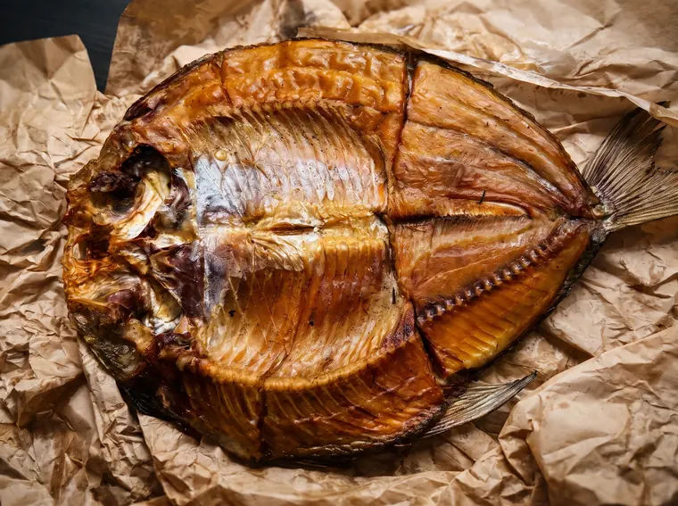
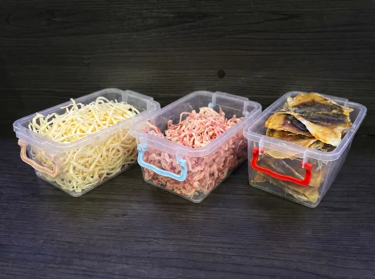
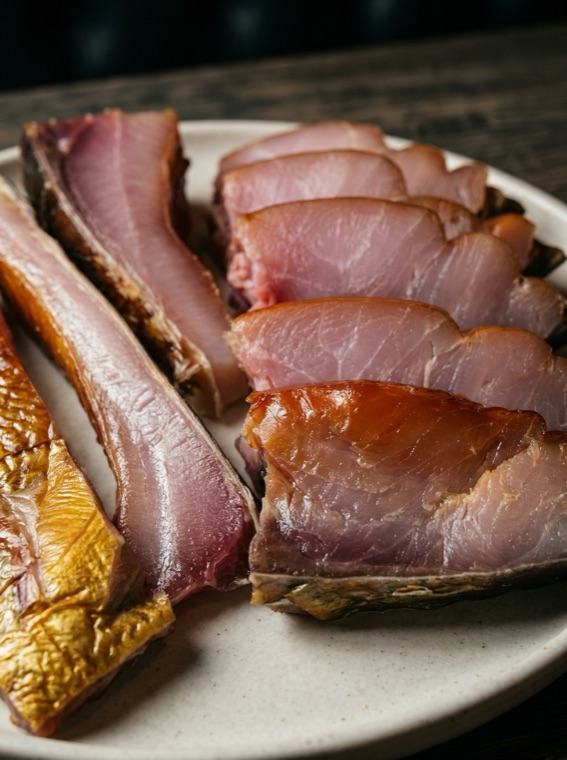
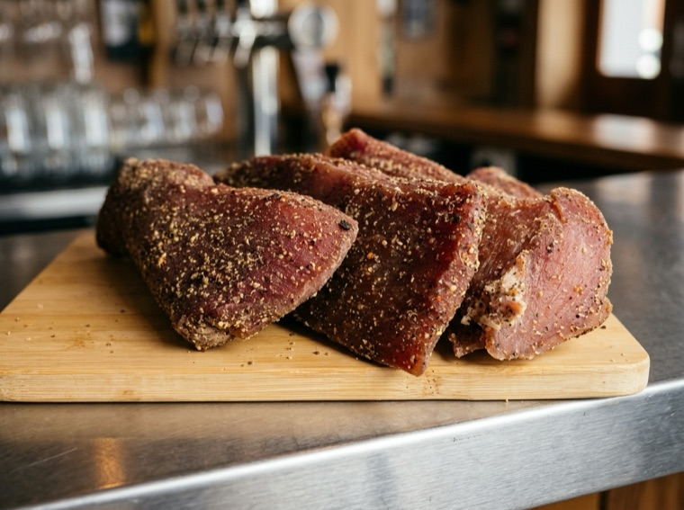

GYM BEER
Gustări · Pește afumat · Snackuri
Gustări

Pește afumatla gramajTostolob, stavrid și alte sortimente de pește afumat, în funcție de stoc.

Calmar afumatla gramajCalmar alb și calmar roșu afumat — două variante menționate în oferta GYM BEER.
 Crevețila gramaj
Crevețila gramajCreveți mici, savuroși, potriviți alături de o bere rece.
 Gustări din porcla gramaj
Gustări din porcla gramajUrechiușe de porc și chipsuri crocante de porc, promovate în sortimentul magazinului.
 Somon afumatla gramaj
Somon afumatla gramajSomon afumat crestat, frumos de servit pe platou.

Balîk afumatla gramajFelii de pește afumat, fragede, pentru o gustare consistentă.
 Pește uscatla gramaj
Pește uscatla gramajPește uscat sărat — clasicul de lângă o bere la draft.
 Peștișori uscațila gramaj
Peștișori uscațila gramajPeștișori uscați, crocanți, la gramaj.
 Calmar mărunțitla gramaj
Calmar mărunțitla gramajCalmar uscat mărunțit, ușor de luat la pachet.
 Raci fierțila gramaj
Raci fierțila gramajRaci fierți cu porumb, în funcție de disponibilitate.

Basturmala gramajCarne uscată cu crustă de piper și condimente.